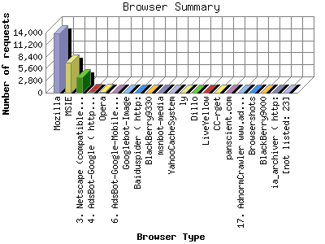

Analog 5.1
Analog 5.1 Report Magic 2.21
Report Magic 2.21The Browser Summary identifies the most popular web browsers used to visit
this site.
Browsers are broken down by recognized categories such as
Netscape Navigator/Communicator, Microsoft Internet Explorer, WebTV, Opera
and the like. Within each category is also a subgroup by version number
such as 'MSIE 5.0' or 'Netscape 4.5'.
This report shows the first 20 results by number of requests. This report is sorted by number of requests.

| Browser Type | Number of requests | |
|---|---|---|
| 1. | Mozilla | 13,800 |
| 2. | MSIE | 6,921 |
| 3. | Netscape (compatible) | 3,559 |
| 4. | AdsBot-Google ( http: | 214 |
| 5. | Opera | 153 |
| 6. | AdsBot-Google-Mobile ( http: | 76 |
| 7. | Googlebot-Image | 68 |
| 8. | Baiduspider ( http: | 38 |
| 9. | BlackBerry9330 | 37 |
| 10. | msnbot-media | 31 |
| 11. | YahooCacheSystem | 28 |
| 12. | ly | 22 |
| 13. | Dillo | 17 |
| 14. | LiveYellow | 15 |
| 15. | CC-rget | 12 |
| 16. | panscient.com | 11 |
| 17. | AdnormCrawler www.adnorm.com | 11 |
| 18. | Browsershots | 10 |
| 19. | BlackBerry9000 | 9 |
| 20. | ia_archiver ( http: | 9 |
| [not listed: 23] | 72 | |
This report was generated on April 16, 2012 16:56.
Report time frame March 29, 2011 03:27 to April 16, 2012 22:03.
| Web statistics report produced by: | |
| Analog 5.1 | Report Magic 2.21 |